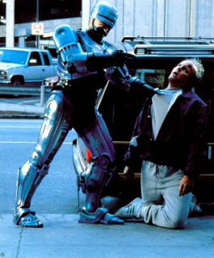

"Stay out of trouble!": Meet the future of law enforcement.Until recently, Juan Rodriguez was a freeway patrolman employed by the City of Chicago. Now he cruises the Chicago Skyway “for private owners,” reports the current issue of Business Week. “In the past, [Rodriguez] had to write out a ticket for each problem” -- such as disabled vehicles, potholes, tire debris, and other traffic impediments. It would often taken the sclerotic municipal services department days to deal with the backlog.
However, on this particular morning all of the problems are cleared up before 10:30, which demonstrated to Rodriguez that the Skyway's new owners “are taking the Skyway to a whole new level.”
Those absentee owners belong to an international consortium created by the Australian-owned Macquarie Bank's Infrastructure Group and Cintra Concesiones de Infraestructura del Transporte of Spain. The same outfit now owns the Indian Toll Road. It is also deeply involved in the proposed 4,000-mile-long Trans-Texas Corridor, a project that would involve condemning huge tracts of private property (over 9,000 square miles of land) in the name of “eminent domain.”
When news of the T-TC hit rural Texas and Oklahoma, residents became understandably concerned. The editorial pages of the newspapers that serve those small communities began to resound with outrage: Nobody had asked them for input regarding a deal with a foreign-owned business combine that would drive many of them off their land – and create a toll road that would sluice profits into the coffers of that same foreign combine.
The Macquarie-Cintra combine heard those complaints, and acted swiftly: Macquarie purchased all of the small-town newspapers along the T-TC route. Now the newsrooms that once resounded with opposition to the combine are owned by it.
In just the last few years, Macquarie Bank – roughly a decade old – has become a major player in the new niche market of buying up transportation infrastructure, such as bridges and roads. It has spent billions of dollars to buy assets of that sort throughout North America.
Along the way, it has made some other interesting acquisitions as well: Besides the rural newspapers in Texas and Oklahoma, Macquarie bought out Giuliani Capital Advisors (GCA), which has about 105 employees in several major cities, including Chicago, New York, and Los Angeles. Created by that Giuliani in 2004, GCA specializes in bankruptcy restructuring and corporate mergers, both of which we will be seeing in abundance, if my suspicions are correct.
Macquarie was cleared by the Federal Reserve Board (.pdf) “to open representative offices in New York ... and Houston, Texas” in November 2003.
At a meeting of the Fed's Board of Governors almost exactly a year earlier, the Sith Lords discussed what the Financial Times referred to as “unconventional means” of pumping up the economy. One anonymous official – most likely current Fed Commissar Ben Bernanke – suggested that the Fed "could theoretically buy anything to pump money into the system,” including “state and local debt, real estate and gold mines--any asset.”
Hmmm.... Could “any asset” include such things as highways, bridges, airports, municipal utilities, and other publicly operated infrastructure now “owned” by debt-plagued states and cities?
Business Week opens its current cover story describing how Steve Hogan, executive director of Colorado's Northwest Parkway Public Highway Authority, was at the point of tears over a $416 construction debt when (trumpet flourishes and hosannas) he “got a letter from Morgan Stanley that promised to solve all of his problems. The bank suggested Hogan could lease the road to a private investor and raise enough money to pay off the whole chunk of debt. Now Hogan, after being inundated with proposals, is in hot-and-heavy negotiations with a team of bidders from Portugal and Brazil. `We literally got responses from all over the world,' he says.”
“With state and local leaders scrambling for cash to solve short-term fiscal problems, the conditions are ripe for an unprecedented burst of buying and selling,” continues Business Week.
Indeed: The Fed, under “Helicopter Ben” Bernanke, continues to inflate, which means it has plenty of pseudo-dollars to throw around. Bernanke earned that sobriquet for a notorious November 21, 2002 speech (delivered almost exactly a year before Macquarie was given permission to open its US offices) in which the future Fed chief hymned the praises of inflation:
“[T]he U.S. government has a technology, called a printing press (or, today, its electronic equivalent), that allows it to produce as many U.S. dollars as it wishes at essentially no cost.... We conclude that, under a paper-money system, a determined government can always generate higher spending and hence positive inflation.”
For instance, Bernanke said, the Fed and feds could hold deflation in abeyance by printing up bales of money and dropping them randomly from helicopters. This was inspired by a sarcastic comment once made by Milton Friedman. Oddly enough, the Fed managed to do this very thing in Iraq, dispatching pallets full of shrink-wrapped “cashpaks” to the Coalition Provisional Authority; the newly minted FRNs were often handed out from helicopters, as well as the back of trucks and jeeps, to all and sundry, and probably wound up buying some of the munitions now used to make orphans and widows of US military families.
But Bernanke, his mind a freshet of depraved inspiration, saw other potential avenues inflation could take: "[T]he Fed has the authority to buy foreign government debt, as well as domestic government debt. Potentially, this class of assets offers huge scope for Fed operations, as the quantity of foreign assets eligible for purchase by the Fed is several times the stock of U.S. government debt.”
He also noted that the Fed could buy up “a wide range of private assets,” including corporate bonds, bank loans, and mortgages. In order to hold deflation at bay -- that is, to spare us the horrors of falling prices --the Fed under Bernanke was prepared to create ever-depreciating dollars in sufficient quantity to buy everything in sight.
In late 2005, Richard Daughty, during a rare moment of lucidity in which he wasn't channeling the Delphic utterances of the Mogambo Guru, explained to me how this could happen:
"There's no limit to what the Fed is prepared to do. The only tool it has is inflation--creating money out of nothing. And Bernanke has explicitly stated that the Fed has the statutory means to use the money it creates to buy anything and everything, including stocks, bonds, houses, and raw land. It's entirely possible that someday we'll see the banking cartel literally owning everything--and Americans are letting this happen."
Why couldn't the Fed carry out this buy-out by way of foreign investment conduits – like the enigmatic Macquarie, and the equally mysterious “bidders from Portugal and Brazil” who were so eager to lend the embattled Steve Hogan a hand? After all, if Daughty's suspicions are correct, the process would have to start somewhere. Why shouldn't the pioneer be the previously obscure Australian bank that now owns the Chicago Skyway, the Indiana Toll Road, a string of refractory rural newspapers in Texas and Oklahoma, and a mergers-oriented financial firm it bought from the current front-runner for the 2008 GOP presidential nomination?
Macquarie may have been the first into the pool, but plenty of others are diving in: Goldman Sachs, Morgan Stanley, the Carlyle Group, Citigroup – all of which are very tight with the Fed, and all of which are exemplars of that perverse variety of oligarchical crony capitalism known as corporatism.
In that system, the risks are subsidized, the losses are socialized, and the profits are privatized.
In the current example, these investors are buying (with capital provided through Fed inflation) infrastructure that was created and maintained with tax dollars. As Business Week observes, infrastructure investments create “captive customers,” so “the cash flows are virtually guaranteed.” If the deals still don't work out, state and municipal governments (or, more likely, Washington) will step in and buy back the infrastructure concessions – or the Fed might find other investors, which is pretty much the same thing.
Consumers will be treated to monopoly pricing – always such a joy – and taxpayers will find no relief, because the politicians who sell off infrastructure concessions have already earmarked the profits for favored constituencies.
Question: If the Fed can buy up the physical assets of embattled city and state governments, why can't it buy up their law enforcement agencies as well?
Answer: It already has, at least in principle.
At this point, the attentive reader – I can see you there, your eyebrows knitted in puzzled curiosity, your foot tapping rhythmically to dissipate your frustrated impatience – is saying: “This is all sort of interesting, but what does it have to do with RoboCop?”
When I saw that film twenty years ago, it struck me as uncannily prophetic. (I speak of the original, not the pointless sequels.) Of all the dystopian visions available in literature and on film, RoboCop (directed by Paul Verhoven, a Dutchman) created an uncannily plausible vision of American totalitarianism – not the dismal, leaden grayness of Soviet Communism, or the lurid pageantry of Nazi Germany, but rather a society run by an all-pervasive corporation that controls its subjects through a combination of synapse-killing mass entertainment and soul-chilling violence.
In that world Omni Consumer Products is the government; it is the military, the police, and the media.
We're not in RoboCop world yet, but we can see its suburbs from here.
Program Notes
To those eagerly awaiting a long-delayed installment of Pro Libertate: the e-journal, I say: Nil desperandum -- it will be available shortly.
The website of the Christian Liberty Party has an audio recording of my April 21 address to the National Committee Meeting of the Constitution Party in Boise, Idaho. I wish to thank Keith Humphrey for making that speech available, for maintaining an amazingly information-dense website, and for his incredible generosity toward my family.
And I'm still working on final edits to the manuscript for my new book, tentatively entitled From Republic to Reich: How the Imperial Executive Devoured the Bill of Rights. I'll let you know as soon as it's available.
The Right Source offers in-depth articles, both in its current news and archives, dealing with this and other important stories. Please check it out.